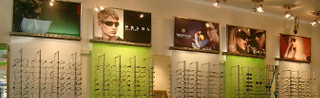

COMPANY
Bringing you the finest eyewear with the best possible service.
Established in 1979, Chinatown Optical Group has been the industry leader in offering professional eyecare services and newest eyewear. The group comprises of Chinatown Optical (flagship store), Hunter Vision Center, and the latest Brooklyn Optical. Everyone one of our stores is a true fine eyewear boutique, incorporating the latest fashion styles and eyecare technology.
After expanding its flagship store in June 2008, Chinatown Optical is now the biggest optical retail store in downtown Manhattan with unparallel selections of fashion eyewear of exclusive and independent designer brands, and vintage styles. The company accentuates its unique image with modern decoration that's refreshing and chic. Attributable to Chinatown Optical's exquisite acumen of trend, their hand-crafted display-wall and counter showcase the most beautiful eyewear frames under appealing and soft illumination.
CAREER
Being in business for over 30 years, Chinatown Optical and its branch stores take pride in our staff for their assistance in providing our customers the ideal pair of glasses. The optical field is broad with promise and challenges for keen, smart individuals to partake in. Our optical salespersons assist in eyewear and lens selection, insurance inquiries, and contact lens consultation. They must have strong verbal communication skills and be flexible to work weekends. Please email keleena@mackee-eyewear.com or fax 718-575-8110 with your resume.